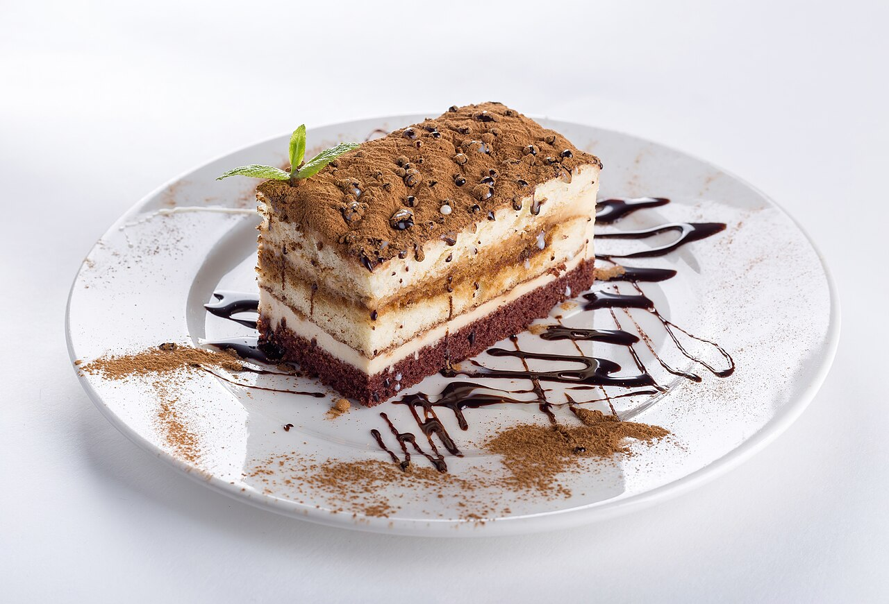

morning
コーヒー・ドリンク内容確認中
一日の始まりに、ゆっくり味わう一杯を。(イメージ)
メニュー名: 準備中 / 価格: 準備中

noon
焼き菓子・スイーツ内容確認中
ドリンクのお供に、ほっとする甘さを。(イメージ)
メニュー名: 準備中 / 価格: 準備中

dusk
軽食内容確認中(提供の有無も確認中)
提供内容が確定しましたら、こちらでご案内します。
メニュー名: 準備中 / 価格: 準備中